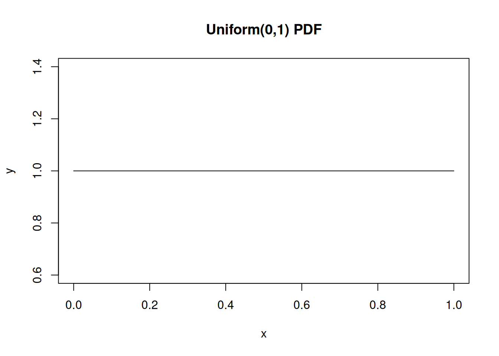
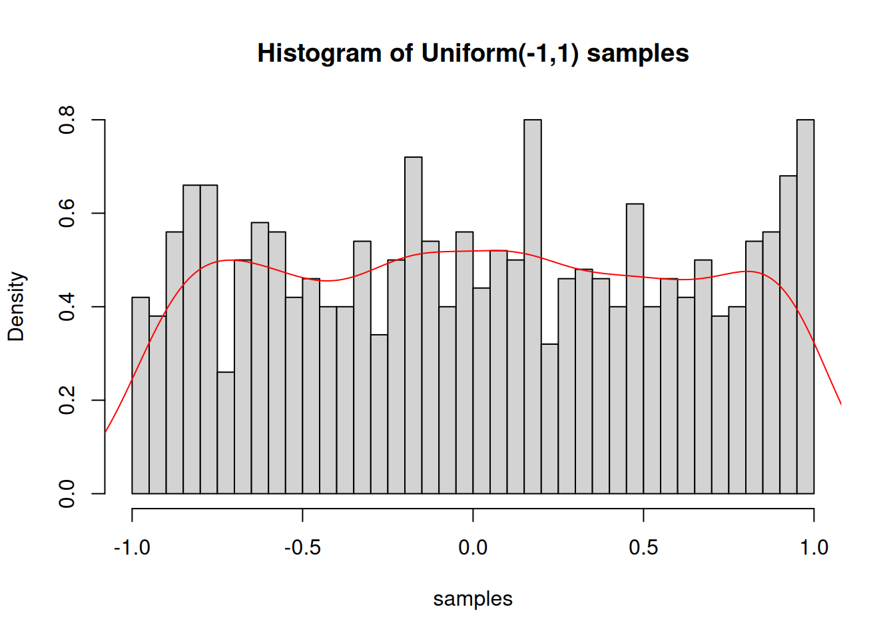

# Densityx <-seq(0, 1, length.out =100)y <-dunif(x, min =0, max =1)plot(x, y, type ="l", main ="Uniform(0,1) PDF")

# Cumulative distributionpunif(0.5, min =0, max =1) # P(X <= 0.5) = 0.5
[1] 0.5
# Quantile functionqunif(0.95, min =0, max =1) # 0.95 quantile
[1] 0.95
# Random generationsamples <-runif(1000, min =-1, max =1)hist(samples, breaks =30, probability =TRUE,main ="Histogram of Uniform(-1,1) samples")lines(density(samples), col ="red")

7.4 Normal (Gaussian) Distribution
The most important distribution in statistics - arises from the Central Limit Theorem.
# Standard normalx <-seq(-4, 4, length.out =200)y <-dnorm(x, mean =0, sd =1)plot(x, y, type ="l", main ="Standard Normal PDF",xlab ="x", ylab ="Density")# Different parametersy2 <-dnorm(x, mean =1, sd =2)lines(x, y2, col ="red", lty =2)legend("topright", legend =c("N(0,1)", "N(1,4)"),col =c("black", "red"), lty =c(1, 2))
# Quantile function (critical values)qnorm(0.025) # -1.96 (lower 2.5%)
[1] -1.959964
qnorm(0.975) # 1.96 (upper 2.5%)
[1] 1.959964
qnorm(0.95) # 1.645 (one-sided 95%)
[1] 1.644854
# Random samplessamples <-rnorm(1000, mean =100, sd =15)hist(samples, breaks =30, probability =TRUE)curve(dnorm(x, mean =100, sd =15), add =TRUE, col ="red")
Special case: \(n = 1\) gives the exponential distribution.
7.6.3 In R
# Erlang is a special case of Gamma with integer shapet <-seq(0, 10, length.out =100)plot(t, dgamma(t, shape =1, rate =1), type ="l",ylab ="Density", main ="Erlang Distributions")lines(t, dgamma(t, shape =3, rate =1), col ="blue")lines(t, dgamma(t, shape =5, rate =1), col ="red")legend("topright", legend =c("n=1 (Exp)", "n=3", "n=5"),col =c("black", "blue", "red"), lty =1)
# Example: Waiting time until 3rd eventn <-3lambda <-1mean_erlang <- n/lambdavar_erlang <- n/lambda^2cat("Erlang(n=3, λ=1): Mean =", mean_erlang, "Variance =", var_erlang, "\n")
Erlang(n=3, λ=1): Mean = 3 Variance = 3
7.7 Gamma Distribution
Generalizes Erlang by allowing non-integer shape parameter.
7.7.1 Definition
\[X \sim \text{Gamma}(\alpha, \lambda)\]
\[f(x) = \frac{\lambda^\alpha}{\Gamma(\alpha)} x^{\alpha-1} e^{-\lambda x}, \quad x \geq 0\]
where \(\Gamma(\alpha) = \int_0^\infty t^{\alpha-1} e^{-t} dt\) is the gamma function.
# Demonstration of LLNset.seed(123)n <-10000x <-runif(n, -1, 1) # Uniform on [-1,1], true mean = 0running_mean <-cumsum(x) / (1:n)plot(running_mean, type ="l", xlab ="n",ylab ="Sample Mean",main ="Law of Large Numbers")abline(h =0, col ="red", lty =2)legend("topright", legend ="True mean = 0", col ="red", lty =2)
7.10.2 Central Limit Theorem (CLT)
For i.i.d. random variables with mean \(\mu\) and variance \(\sigma^2\):
# Demonstration of CLT with uniform distributionset.seed(42)n <-50# Sample sizem <-1000# Number of samples# Generate sample means from uniform distributionsample_means <-replicate(m, mean(runif(n, -1, 1)))# Plothist(sample_means, breaks =30, probability =TRUE,main =paste("CLT: Distribution of Sample Mean\nn =", n),xlab ="Sample Mean")# Theoretical normal distributiontheoretical_mean <-0theoretical_sd <-sqrt((1/3)/n) # Var(Uniform(-1,1)) = 1/3curve(dnorm(x, theoretical_mean, theoretical_sd),add =TRUE, col ="red", lwd =2)
Exercise 1. Generate 1000 samples from N(100, 225). Calculate the proportion that fall within 1, 2, and 3 standard deviations of the mean. Compare to the empirical rule (68-95-99.7).
Exercise 2. If radioactive decay follows an exponential distribution with rate \(\lambda\) = 0.1 per second, what is the probability that a particle decays within the first 5 seconds? What is the expected waiting time?
Exercise 3. Verify the CLT with your own simulation using a non-normal distribution (e.g., uniform or exponential).
7.14 Further Reading
Original Slides: ../Advanced_Statistics_Prob2.pdf
“Probability and Statistics for Engineers” by Walpole et al.